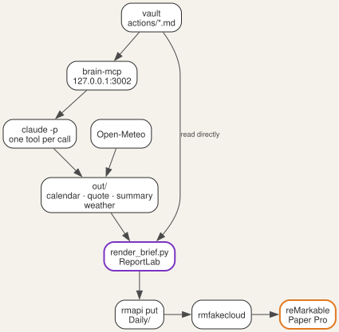
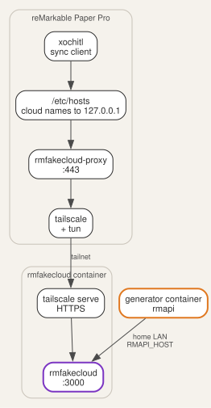

At five in the morning a small container renders one PDF and sends it to the
tablet. When the tablet wakes, the brief is already in its Daily folder. It
holds today's meetings, the tasks that need doing, the next four weeks, and ten
pages of squared paper for notes.
{kind=link}
This post builds that pipeline on top of the vault and MCP (Model Context Protocol) server from part 1. It targets a reMarkable Paper Pro and a Linux container on a home server. The generator is at github.com/morganp/rmbriefing.
What the brief contains
The brief is a PDF drawn at the Paper Pro page size of 509 by 679 points. Every page after the first is optional, and the generator leaves out any page with nothing to show:
| Page | Contents |
|---|---|
| 1 | Date, weather, a four-week mini calendar, today's meetings and events, the task checklist, and the next 27 days |
| 2 | The one task that matters most, the quote, tasks that did not fit, the waiting, soon and sometime tasks, finance figures, and long-term goals |
| 3 | The full Daily Stoic reflection behind the quote |
| 4 | A legend for the areas and priority labels |
| 5 | Edits applied from yesterday's handwriting (part 3) |
| 6 to 15 | Squared note paper at 5 mm |
The task checklist groups actions under WORK, HOME and PERSONAL, using the first
tag of each action. Each row carries a checkbox, the action title and a priority
label. Page 1 holds overdue, today and next; the rest follow on page 2.
{kind=link}
Gathering the day
A single shell script, generate_daily_brief.sh, collects the inputs into an
out/ folder and then renders. Most inputs come through the MCP server. The
script calls Claude Code in print mode, restricted to one tool, and writes the
raw tool result to a file:
claude -p "Call list_events with from=$RANGE_START and to=$RANGE_END. Output ONLY the raw tool result text verbatim, nothing else - no commentary, no markdown formatting." \
--mcp-config '{"mcpServers":{"secondbrain":{"type":"http","url":"http://127.0.0.1:3002/mcp"}}}' \
--allowedTools "mcp__secondbrain__list_events" \
> "$OUT_DIR/calendar_events.txt" || true
The MCP server runs in the same container, so the script reaches it on the local port without the public sign-in. The inputs are:
| Source | Tool or service | Used for |
|---|---|---|
| Calendar | list_events, Monday to Monday plus 34 days |
Meetings, all-day events, holiday shading |
| Quote | get_daily_stoic |
Footer box and reflection page |
| Area notes | read_text |
Finance figures, holiday balance |
| Summary | the daily-summary skill |
Today notes, the next 27 days, goals |
| Weather | Open-Meteo, no key needed | Header line and rain alert |
| Actions | actions/*.md, read from disk |
The task checklist |

The checklist reads the action files directly instead of asking the model. The
files give the exact stage and due of every action, so each action gets
exactly one checkbox on each brief. The renderer derives the priority with the
rules from part 1, using the brief's own date, so a re-render of an old brief
reproduces that day's list.
Drawing the PDF
render_brief.py draws every element with ReportLab canvas calls rather than a
layout engine. Direct drawing gives exact control over positions, which part 3
depends on. The fonts are the PDF base fonts, Helvetica and Times, plus the
monochrome Noto Emoji font for weather and section icons, which renders cleanly
on e-ink.
The palette is black, white and grey with one orange-red accent, #d9401e.
Only overdue and due-today items use the accent, so it always means "act now".
The mini calendar adds two fills: a yellow lower half for school holidays and a
blue upper half for work holidays, so one day can show both.
The checkbox is a 7 by 7 point stroked rectangle, and nothing else in the brief draws one:
def draw_checkbox(c, x, y):
c.setStrokeColor(INK)
c.setLineWidth(0.9)
c.rect(x, y, 7, 7, stroke=1, fill=0)
Part 3 finds the checkboxes by searching the PDF for rectangles of exactly this size, so the legend page shows its priority labels without checkboxes. The first 2 mm of each page stays clear of the reMarkable tool menu. The note pages leave a 54 point band at the top for the same reason.
A private cloud for the tablet
The tablet syncs with rmfakecloud, a self-hosted replacement for the reMarkable cloud, instead of the official service. The tablet keeps its normal sync behaviour, and the documents stay on your own server.
| Component | Version | Runs on |
|---|---|---|
| reMarkable Paper Pro firmware | 3.27.3.0 | Tablet |
Vellum tun kernel module |
1.0.2-r0 | Tablet |
Tailscale, with tailscale-tun |
1.102.2-r0 | Tablet |
| rmfakecloud-proxy | 0.0.10-r2 | Tablet |
| rmfakecloud | ddvk/rmfakecloud:latest |
Server container |
| rmapi | 0.0.35 | Generator container |
Vellum packages are built against a firmware range, so match tun to your
firmware: 1.0.2 covers 3.27, and 1.0.3 needs 3.28. Turn off automatic updates
on the tablet before it joins Wi-Fi, so the firmware stays inside that range.
Set up the server first:
- Create an unprivileged Debian container with nesting enabled, and install Docker.
- Run
ddvk/rmfakecloudwith aJWT_SECRET_KEYfromopenssl rand -hex 32, listening on port 3000. LeaveSTORAGE_URLunset, so the server answers on whichever address a client uses. - Pass
/dev/net/tuninto the container, install Tailscale, and runtailscale serve --bg http://localhost:3000. This gives the server an HTTPS name,rmcloud.<tailnet>.ts.net, with a real certificate.
Then set up the tablet:
- Back up the tablet. Enabling developer mode factory-resets it.
- Enable developer mode, then log in over SSH with a key.
- Install Vellum, then run
vellum add tun=1.0.2-r0andvellum add tailscale tailscale-tun. - Run
tailscale upand join the same tailnet as the server. - Install the proxy with
install.sh install https://rmcloud.<tailnet>.ts.net. - Add
<server tailnet IP> rmcloud.<tailnet>.ts.netto/etc/hosts, because the proxy installer resets the tablet's DNS settings. - Pair the tablet from its own settings screen, using a code from the rmfakecloud web page.
The proxy redirects the reMarkable cloud names to itself and forwards them to rmfakecloud over the tailnet. The generator container stays off the tailnet and talks to rmfakecloud on the home network.

Delivery and the 05:00 run
rmapi uploads the finished PDF. Register it once against rmfakecloud with a
one-time code from the server's Connect page, then always set RMAPI_HOST. The
rmapi configuration is not tied to a host, so a run without the variable talks
to the official cloud and replaces the saved token.
The script names each brief with the date and weekday, 20260925 Fri brief.pdf,
and exits early if that file already exists. The upload has a fallback for a
document that is already on the tablet:
rmapi put "$PDF" Daily || rmapi put --content-only "$PDF" Daily
Cron runs the script as root in the generator container:
0 5 * * * /opt/rmbriefing/generate_daily_brief.sh >> /var/log/rmbrief-daily.log 2>&1
Cron starts with a minimal environment, so the script sets its own:
HOME, a PATH that includes /usr/local/bin, the rmapi configuration folder,
and the Claude Code token from claude setup-token, stored in claude.env
with mode 600.
Build your own
- Run the part 1 vault and MCP server, and check
list_actionsfrom Claude Code. - Clone
rmbriefinginto the same container, and runpip install -r requirements.txt. - Install the
daily-summaryskill in~/.claude/skills/for the user that runs cron. - Copy
.env.exampleto.envand set the vault path, the MCP address,RMAPI_HOSTand your latitude and longitude. - Run
examples/render-sample.sh, which renders the sample vault, and open the PDF on your computer. - Set up rmfakecloud and the tablet, and push one PDF by hand with
rmapi put. - Run
generate_daily_brief.shonce by hand, then add the cron line.
Start with steps 1 to 5. The PDF is useful on any tablet or printer, and the reMarkable delivery can follow later. Part 3 adds the return path, reading ticks and handwritten notes on the brief back into the vault.